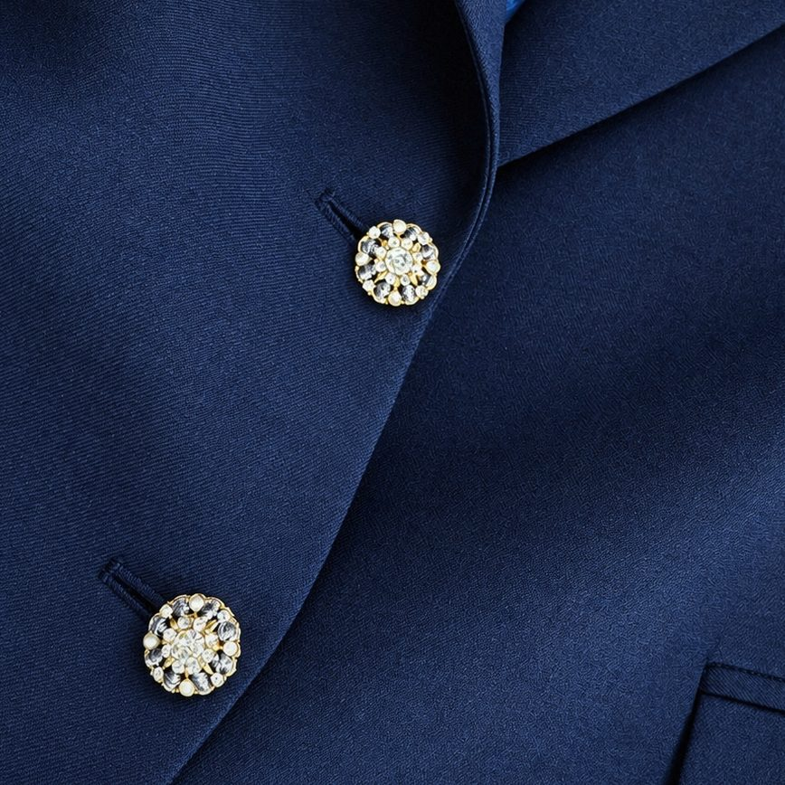
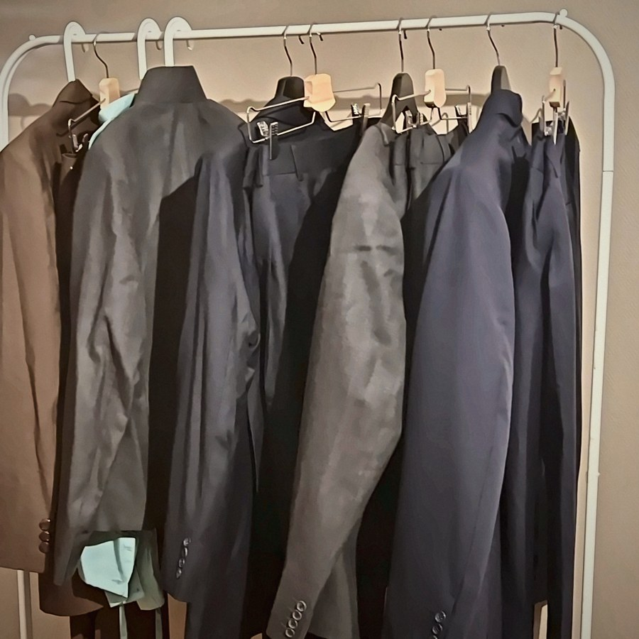
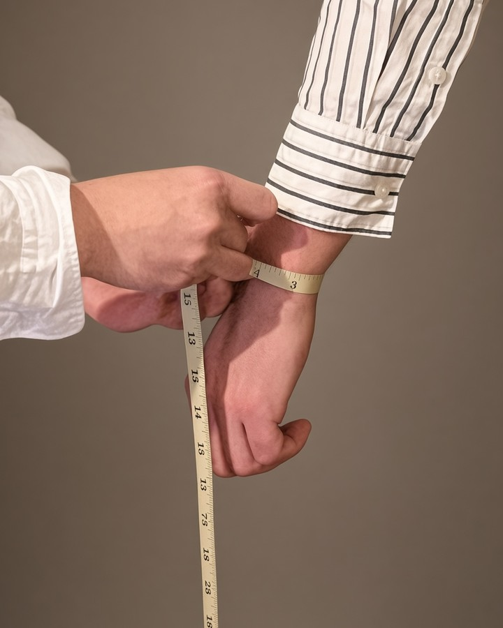
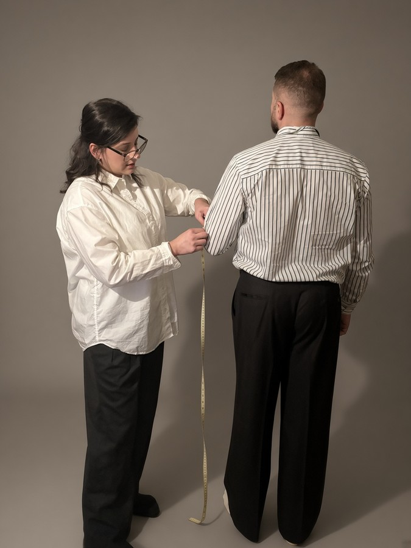
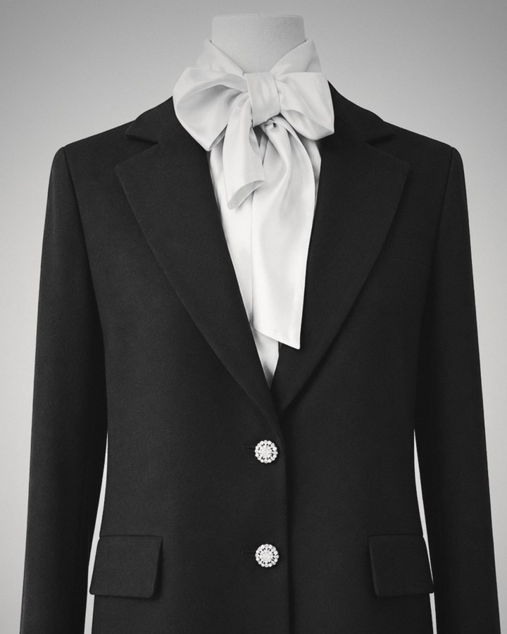
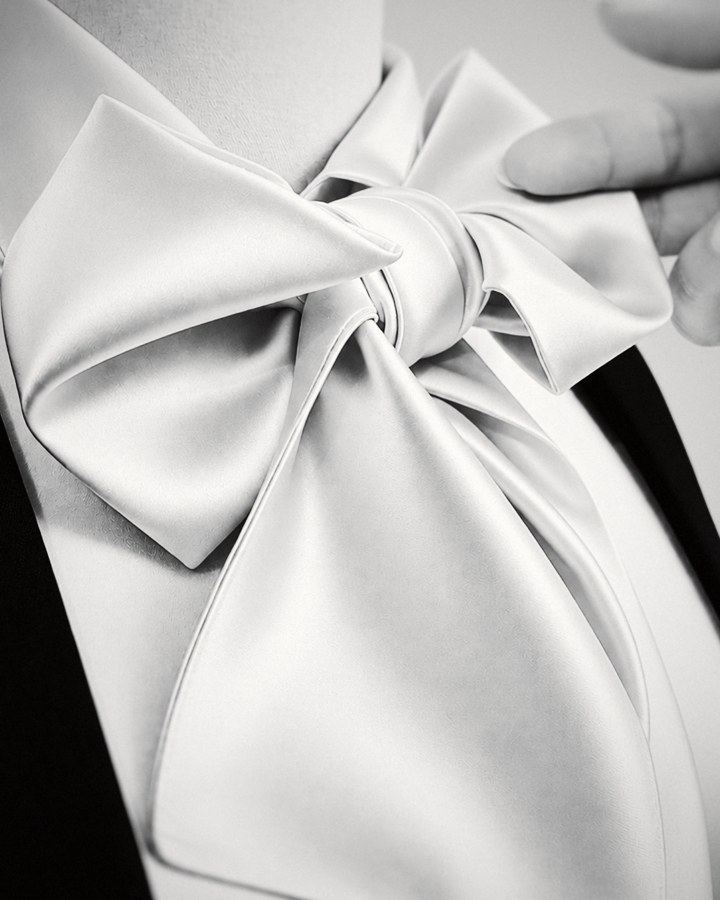
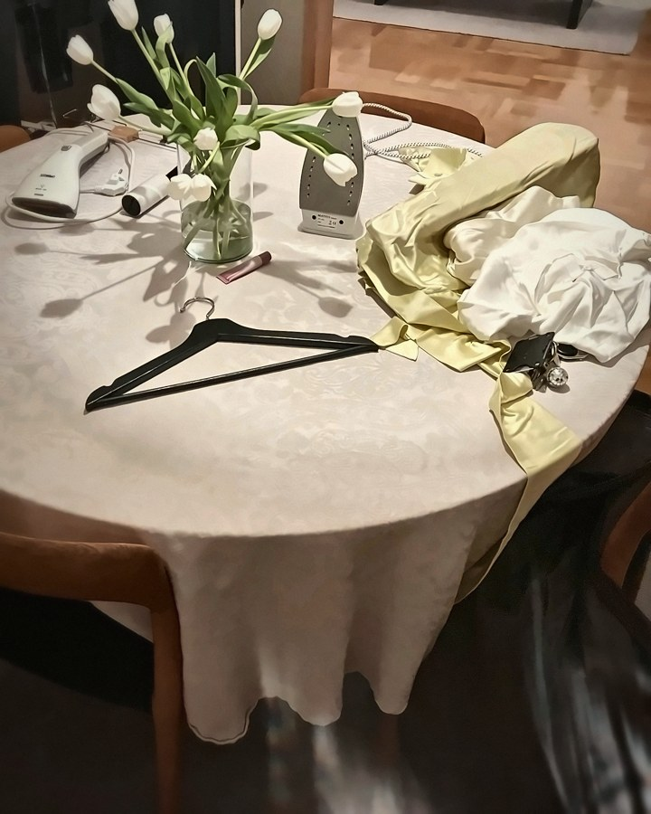
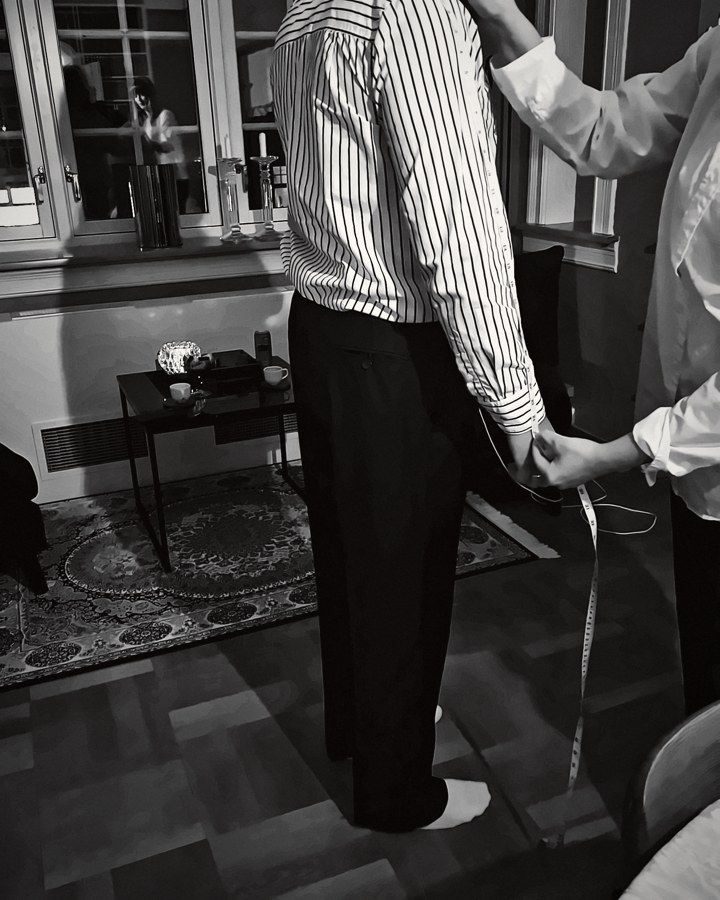
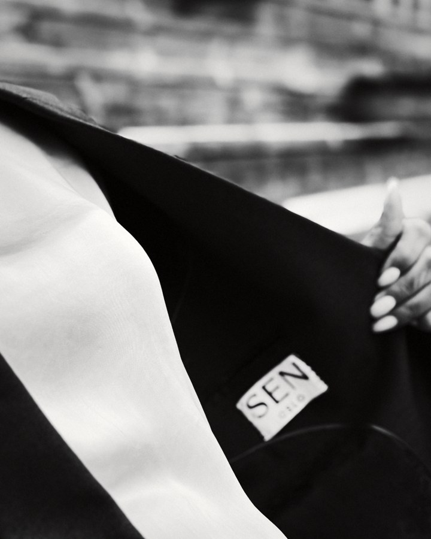

SEN
Oslo
Enkelt, rent og skreddersydd
En kveld i november var vi hjemme hos designer Sheila Brox. Vi så en dress bli tilpasset: målebånd, knapper og passform, justert til kunden var fornøyd.
Detaljene først
SEN Oslo lager skreddersydde dresser og blazere. Stilen er enkel, clean, minimalistisk og tidløs – plagg du kan kle opp, og like gjerne kle ned.
Fargene er bevisst rolige, så dressene kan brukes i hverdagen. Det som skiller dem fra butikkhylla, er detaljene: en annen knapp, et litt annet snitt, en sløyfe i satin.
Sheila vil ikke at plaggene skal masseproduseres. Masseproduksjon gir standardstørrelser, og kundene hennes er ofte de som vil ha noe annet. Det er også viktig for henne at de som syr, får betalt for det gode arbeidet de gjør.




Samtalen i stua
SEN-intervjuet er gjengitt med våre egne ord, basert på notatene vi tok under besøket.
- AVANTHvordan startet SEN Oslo?
- Sheila fortellerUten noen plan. Noen spurte om hun kunne lage dresser, fordi hun liker å lage ting og er kreativ. Hun så en åpning i markedet og grep den. I stedet for å bruke tid på en stor lansering ville hun få produktet ut og lære underveis.
- AVANTHva er du opptatt av når du tar mål?
- Sheila fortellerAt passformen sitter. Hun lytter til hvilken stil kunden vil ha, viser direkte på plagget hvor knappene kan sitte og hva som kan justeres, og snakker om farger og behov. Hun gir seg ikke før kunden er fornøyd.
- AVANTHvor står SEN Oslo i markedet?
- Sheila fortellerMellom de som vil ha noe annerledes i designet, og de som opplever at plagg fra hylla er for lange eller for korte. Der fyller hun hullet: design, farge og passform kan velges fritt.

Hun gir seg ikke før passformen sitter.
Fra besøket hos SEN Oslo



Fra Gullruten til drømmebutikken
- AVANTHvordan holder du deg oppdatert?
- Sheila fortellerHun følger med på farger: i vanlige butikker, under fashion week og i forecasting av hvilke farger som blir populære fremover.
- AVANTHva er det største arrangementet en av dressene dine har vært på?
- Sheila fortellerDen første ordentlige kunden hennes gikk med en SEN-dress på Gullruten. Siden har dressene ifølge Sheila også vært brukt under fashion week i utlandet og på filmfestivaler. At folk bruker dem der – og bestiller igjen – ser hun som en stor tillitserklæring.
- AVANTHva er drømmen?
- Sheila fortellerEn liten butikk. Den trenger ikke være stor: én i Oslo, og kanskje én i Bergen eller Stavanger. I dag er designet en sidejobb ved siden av en full stilling.
- AVANTOg kunden?
- Kunden fortellerHan hørte om SEN Oslo gjennom en venn og så et innlegg med en brun og en rød dress. Han falt for den brune og tok kontakt. Stilen minnet ham om det han ser i London. Han tok sjansen, og er veldig fornøyd.


Sheilas beste stylingtips
«Less is more.»
Selv er hun enkel i stilen: rene linjer, en clean look og ikke for mye pynt. At knappene er litt annerledes, er nok.
— Sheila Brox · Foto: Sheila Brox / SEN Oslo

Takeaways – fem ting vi tok med oss
- Start før du føler deg klar.SEN Oslo startet uten plan. Noen ganger er det best å gjøre det i stedet for å lure.
- Bruk nettverket ditt.Mulighetene kommer ofte gjennom folk du kjenner – og de er ikke alltid lette å se.
- Spør direkte.Sheila er ikke sjenert. Hun tar kontakt selv og spør om folk er interessert.
- Finn riktig syer.Test flere, og velg den som passer visjonen og stilen din.
- Detaljen gjør forskjellen.En annen knapp eller et litt annet snitt kan være nok.
Foto: AVANT
Fra besøket og verkstedet







- Merke
- SEN Oslo
- Designer
- Sheila Brox
- Tekst
- AVANT
- Foto
- AVANT (besøket)
- Produktfoto
- Sheila Brox / SEN Oslo
- Bildebehandling
- Bilder digitalt bearbeidet
- Utgave
- Featured Edit 01 · Høst 2026